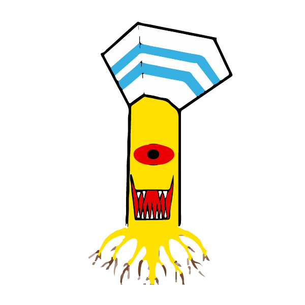

<ons-page>
    <ons-toolbar>
        <div class="center">五稜郭タワー</div>
    </ons-toolbar>


    <div style="text-align: center">
        <br>
         <span id="sampleOutputE" style="margin-left: 10px;">5</span>
         
           <span id="php2" style="margin-left: 10px;"></span>
         <ons-button
           onclick="countDownE();damage();"
            id="30" style="display:;">
           こうげき
       </ons-button>
       
        
         <ons-button
            onclick="myNavigator.pushPage('page2.html')"
              id="31"style="display:;">
            まもる
        </ons-button>
        
         <ons-button
            onclick="myNavigator.pushPage('page2.html')"
              id="32"style="display:;">
            にげる
        </ons-button>
       
       
        <ons-button
            onclick="getid1();myNavigator.pushPage('goryokaku.html');" id="33"style="display:none;" >
            五稜郭タワー
        </ons-button>
        
         <ons-button
            onclick="getid2(); myNavigator.pushPage('hakodateyama.html');" id="34"style="display:none;">
            函館山
        </ons-button>
        
         <ons-button
            onclick="getid3();myNavigator.pushPage('akarenga.html');" id="35"style="display:none;">
            赤レンガ
        </ons-button>
        
         <ons-button
            onclick="getid4();myNavigator.pushPage('yunokawa.html');"  id="36"style="display:none;">
            湯の川
        </ons-button>
       
       
    </div>

</ons-page>